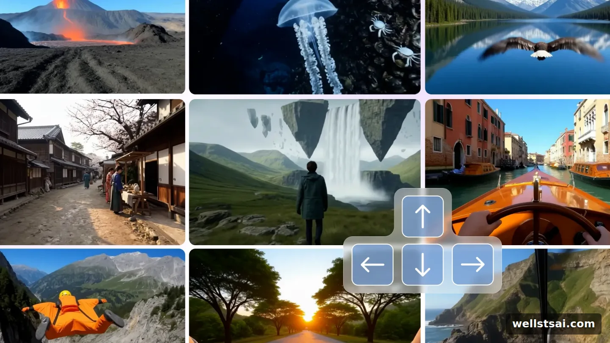
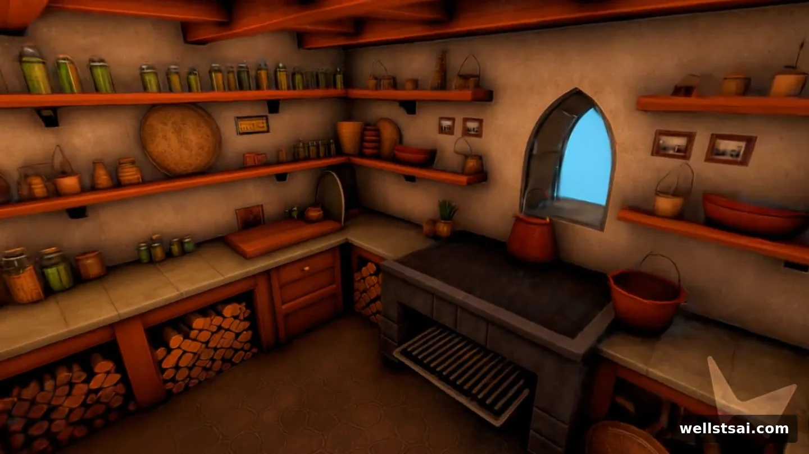
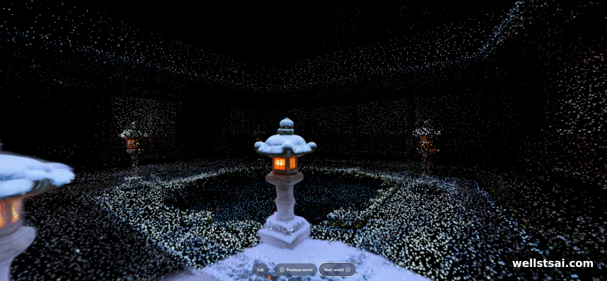
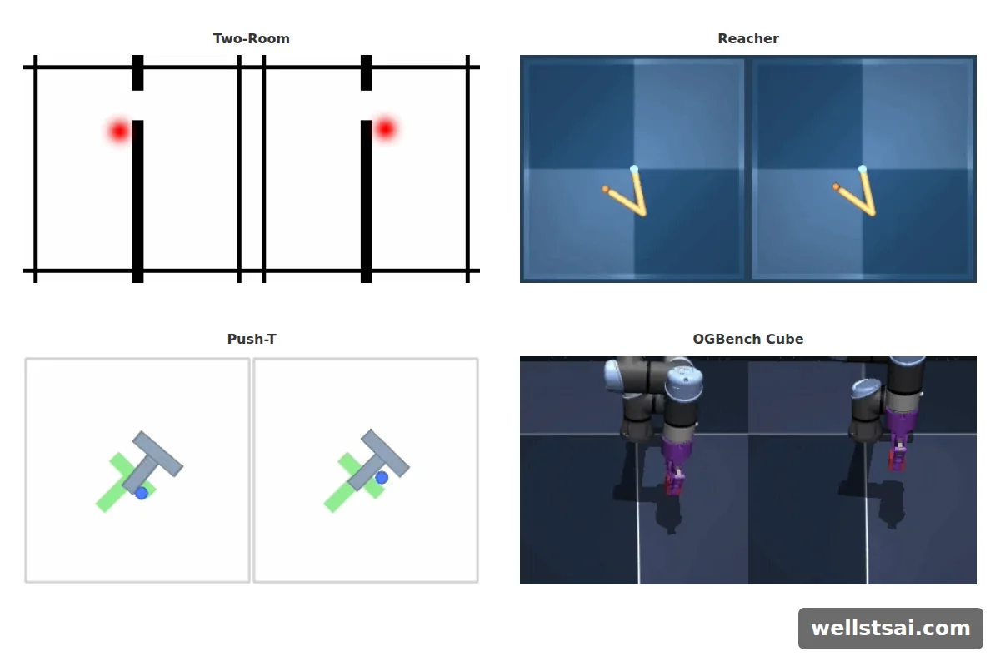

🎬 提到世界模型，很容易想到《一級玩家》
《一級玩家》裡，人只要戴上設備，就能進入名叫「綠洲」的虛擬世界。在裡面可以賽車、打仗、交朋友，做許多現實中做不到的事。《黑鏡》更進一步，想像人的意識可以被放進數位環境，在另一個世界繼續生活。
這就是「世界模型」最容易讓人聯想到的畫面：一個跟真實世界差不多，甚至比現實更自由的虛擬世界。那裡有固定的空間、有持續存在的人物與物品，發生過的事情也會留下影響。
還有另一個方向。《機械公敵》裡的機器人生活在人類社會，必須看得懂眼前的環境，知道什麼可以拿、怎麼走才不會撞牆，以及動手之後會發生什麼事。
一邊是人進入數位世界，另一邊是機器人來到現實世界。兩邊都讓人期待：電腦裡有一套對世界的理解，可以照著它推想接下來會發生什麼。
但電影已經把場景、人物、記憶、互動全部安排好了。目前被稱為世界模型的技術，往往只做到了其中一部分。至於把意識上傳、在數位世界永生，仍然是更遙遠的想像。
推一下桌上的杯子，接著會發生什麼？
先把整個虛擬世界放一旁，只看桌上的一杯水。
杯子放在桌子中央，裡面有半杯水。輕輕推一下，杯子可能往前滑；如果已經很靠近桌邊，推下去就可能掉到地上，水灑出來，杯子甚至摔破。
這件事可以拆成三步：
杯子在哪裡、離桌邊多遠、裝了多少水。這些就叫「狀態」。
往某個方向推一下，力道可能很輕，也可能很重。
杯子會滑多遠？會不會掉下去？水會不會灑出來？
世界模型的一個核心想法，就是把這個過程放進電腦：知道目前的情況，再預測做出某個動作之後，環境會怎麼改變。
這也說明了，世界模型不一定要做出整個地球。一個只能預測桌上物品如何移動的模型，也能研究這件事。差別在於，它能處理的「世界」有多大，裡面的事情又有多複雜。
常被提到的 2018 年研究《World Models》，就是讓系統學習遊戲環境的變化，幫助遊戲角色做決定。研究中的世界可以很小；產品名稱帶來的想像，卻常常大得多。
把接下來的世界，畫成影片
問題來了，電腦要怎麼記住杯子、桌子和周圍的東西？最直覺的做法，就是用畫面。
把眼前的情景交給模型，讓它生成後面會發生的畫面。像 Sora 這類影片生成模型，就讓「做出一段看起來像真實世界的影片」成為可能。OpenAI 在 2024 年的 Sora 說明中，也把這條路與世界模擬連在一起。
如果再加入方向鍵，事情就更像遊戲了：按前進，畫面往前；按轉向，畫面跟著轉；角色做了動作，模型就生成後面的情景。Google 的 Genie 3，就能生成這類可以互動的環境。 
它跟一般遊戲最有想像空間的差別，是接下來的畫面可以由模型隨著操作生成，不必事先把每條路、每個場景全部做好。
問題是：把未來畫出來，就代表真的懂世界嗎？
回到那個杯子。生成一段「杯子掉下去、碎掉」的影片，看起來可能很像真的。但如果換成塑膠杯、改變推的力道，或讓杯子裡裝滿水，它還能不能做出合理的變化？這就比畫出一段漂亮影片更難。
另一個明顯問題是，鏡頭看不到的東西，未必能一直被記住。一隻狗離開畫面後，再轉回來時還在不在？剛才出現的人物會不會換了樣子？留在牆上的痕跡，過一段時間還有沒有？這些都是影片式世界模型要處理的問題。
這不代表它們完全記不住場景，而是記得住多久、換多少角度之後還可靠，都有邊界。Genie 3 的研究說明就列出動作種類有限、複雜人物互動仍有挑戰，以及連續互動時間有限等問題。
以 2026 年 1 月公開的 Project Genie 原型為例，當時每次生成限 60 秒，官方也說明角色控制、操作延遲和不符合真實物理的情況仍待改善。能玩上一小段，距離能在裡面長期生活的「綠洲」，還差很多。
這一類已經能生成會變動的畫面，有些還能接受操作；但畫面背後是否有穩定存在的物品與可靠的規則，仍是關鍵缺口。
先搭好一個三維場景，再從不同角度看它
既然每次生成畫面都可能把東西畫變了，那就先把房間搭好，再把鏡頭放進去。
這比較像做一間模型屋：沙發在左邊、窗戶在右邊，無論鏡頭怎麼轉，看的都是同一間房子。World Labs 的 Marble，就能從文字或圖片生成這類三維場景。 
其中一種表示方式叫「高斯點元」。可以先想成用許多帶有顏色、大小和透明度的小光斑，在三維空間裡拼出房間的外觀。電腦從某個角度看這些光斑，就能產生那個角度的畫面；這個把三維內容變成畫面的過程，就叫「渲染」。 
Marble 也能匯出三維網格，也就是常見三維軟體能使用的模型形式。這跟只拿到一段影片很不一樣：生成的空間可以留下來，供後續使用。
房間搭好了，裡面的杯子就能拿起來嗎？
這正是最容易想得太完美的地方。一個看起來像杯子的三維物件，不一定已經具備杯子的各種特性。
它有沒有內部空間？能不能裝水？受到多大力量會破？桌子被推動時，它會跟著滑動還是留在原處？這些都需要另外處理。只有表面外觀，還不足以決定答案。
即使加上讓角色不會穿牆的碰撞功能，也只處理了一部分問題。布料會皺、海綿會被壓扁、水會流動，跟一個硬盒子撞到另一個硬盒子，是不同程度的難題。
而且，固定的三維場景也可能有做錯的地方。某個角度看起來很漂亮，走近才發現物體形狀扭曲、表面有破洞，或某些東西漂在半空中。從各個角度看到同一個東西，不代表那個東西一定做對了。
World Labs 的另一項產品 Atlas還涵蓋影片與時間變化等能力，不能把所有產品都當成靜態模型。但判斷時仍然得問：它是在改變觀看角度，還是也能讓物件被操作，並且合理地改變？
這一類更容易保留固定的空間，但「走進一個場景」與「在裡面自由做事」，中間還隔著物品互動和物理規則。
先預測會發生什麼，不急著把它畫出來
前面兩種做法，很大一部分都在處理「世界看起來是什麼樣子」。但要判斷杯子會不會掉下去，真的有必要先把桌子的木紋、牆上的海報都畫得很漂亮嗎？
人判斷這件事時，通常只需要注意幾個重點：杯子在哪裡、正在往哪裡動、離桌邊有多遠，以及推的力道有多大。其他細節可以先放一旁。
於是，另一種思路是：先讓電腦抓住影響事情發展的重要資訊，在內部預測變化；需要展示時，再把結果轉成畫面。
這些資訊在電腦裡會變成一串數字。研究中常把這種內部表示稱為「潛空間」。名字雖然抽象，先理解成「電腦整理過、拿來推想事情的內部筆記」就可以了。筆記裡的每個數字，未必都能直接翻譯成一句人話。
楊立昆倡議的聯合嵌入預測架構（Joint Embedding Predictive Architecture，JEPA），以及 LeWorldModel 等研究，就是沿著這個方向探索。最後的結果可以拿來產生畫面，也可以用來幫機器人選擇下一步動作。 
換成內部筆記，就比較懂世界了嗎？
也沒有這麼簡單。筆記如果只記住杯子的位置，卻漏掉它正在快速滑動，還是會猜錯。記不清玻璃杯與塑膠杯的差別，也可能錯估碰撞之後的結果。
因此，「用潛空間預測」是一種做法，不能直接當成「已經掌握世界規律」的證明。它在某些小範圍任務中有效，還要繼續確認換了物件、環境或動作之後，能不能保持效果。
另外，影片模型本身也會使用內部數字表示。這幾條路並不是完全分開的陣營；這裡強調的差別，是模型主要在追求畫面的完整，還是先學到有助於預測和行動的資訊。
因為大家說的「世界」，其實不一樣大
有人說世界模型，想到的是能進去生活的虛擬世界；有人想到能預測環境變化的系統；也有人拿它來形容影片生成或三維場景產品。
這些方向都想接近「理解世界」，但目前做出的能力不同。只說「它能預測世界的下一個狀態」，還是很難知道它到底能做什麼。關鍵是再多問一步：這個「狀態」，究竟是一張畫面、一個三維場景，還是電腦內部的一串數字？
| 主要做法 | 做出來的是什麼 | 還不能直接代表什麼 |
|---|---|---|
| 生成畫面 | 一段影片，或會隨操作變化的畫面 | 畫面之外的物品一直存在，所有動作都有合理後果 |
| 生成三維場景 | 可以從不同角度觀看、保留下來的空間 | 裡面的杯子能裝水、布料會變形、物品能任意操作 |
| 先在內部預測 | 電腦對接下來變化的估計，可用來選擇動作 | 已經懂得各種材質、各種環境的所有規則 |
所以，「世界模型沒有單一固定用法」是合理的提醒，但也不必因此覺得這個詞完全沒有意義。只要把它收到什麼、產生什麼、能做哪些事說清楚，很多混亂就會消失。
真正需要小心的是，廠商展示了一小部分能力，觀眾卻補上一整套想像：看到漂亮房間，就以為裡面的東西都能使用；看到模型能推測一個動作，就以為它已經理解所有物理規律。未來想做到的事，不能直接當成現在已經做到的事。
世界不只難描述，也很難準備足夠的學習材料
生成下一句話，可以從大量文章裡學習；生成畫面，可以從大量圖片與影片裡學習。但要學會「推一下杯子之後，會發生什麼」，光是看得到畫面，未必就有足夠資訊。
影片拍到了杯子滑動，卻不一定記錄推的力道、杯子的重量、桌面的摩擦，以及杯子裡裝了什麼。同樣的畫面，背後可能有不同原因。這些資訊缺少了，模型就可能學會常見的樣子，卻沒有學會換一種條件後該怎麼預測。
遊戲和模擬器可以補上一些資料，因為裡面的規則、物件和動作比較容易掌握。但模型也可能只熟悉那套遊戲規則，換到真實桌面就不靈了。怎麼讓學到的東西能在不同環境繼續使用，仍然很難。
那靠語言模型，能不能走到同一個目標？
文字確實也能描述世界。例如，把棋盤上棋子的位置寫下來，再給一個移動指令，就能要求模型描述移動後的棋盤。Qwen-AgentWorld這類研究，也會用語言模型模擬某些電腦操作環境。
這說明世界模型未必只有一種技術起點。但文字裡能說明杯子會摔破，跟機器人能精準拿起杯子，還是兩種程度的能力。能在一類任務表現很好，也不能直接保證其他難題會自動解決。
先從小範圍做起，是比較容易理解的進步方式：先可靠地處理一張桌子、幾種物件與幾種動作，再逐步增加複雜程度。目標不必一開始就是複製整個世界，但每一步都得真的做得到。
🔎 現在離電影裡的世界，還缺什麼？
用幾個簡單問題，就能看出那段距離。
- 轉個頭，東西還在嗎？物品與人物能不能一直保持原樣，做過的改變會不會被忘記？
- 除了看和走，還能做什麼？能不能開門、拿起杯子、移動桌子，而不是只有鏡頭在移動？
- 碰到不同東西，反應合理嗎？水要會流、布料要會皺，玻璃與海綿也不能有一樣的反應。
- 能維持多久，換個環境還行嗎？幾秒鐘的漂亮示範，能不能延長成持續可靠的互動？
這些問題都比「畫面有沒有很驚人」更接近一個世界能不能真正運作。漂亮場景與生成影片已經有用途，有限環境裡的預測也有價值；但它們各自的進展，還沒有自動拼成一個什麼都能做的世界。
未來或許能把這些能力接起來，做出更自由、更完整的虛擬環境，也讓機器人更懂得如何行動。那是值得期待的方向，距離何時能實現，仍然不能靠一個名字決定。
世界模型可以先這樣理解
它想學的是：世界現在是這樣，接下來會怎麼變；如果做了一個動作，又會有什麼不同。目前有的擅長生成畫面，有的擅長搭出空間，有的在研究怎麼先預測再行動。大眾想像的，卻往往是這些能力全部完成之後的樣子。記住這個差別，就比較不會把一段漂亮展示，當成一個完整世界已經誕生。